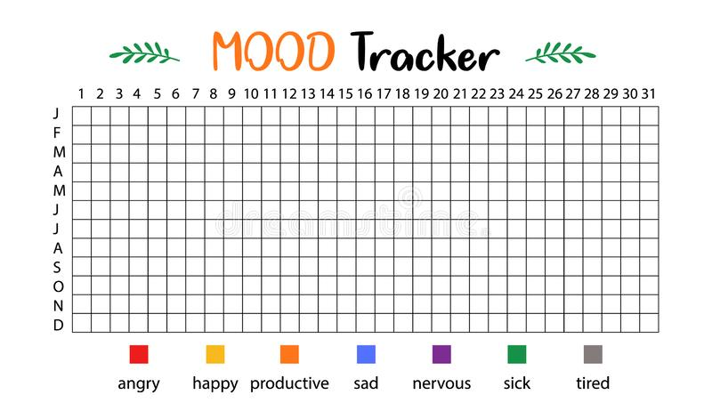

    <!--Nav Bar-->
    <nav class="navbar" role="navigation" aria-label="main navigation">
        <div class="navbar-brand">
            <a class="navbar-item">
                
            </a>

        </div>

        <div id="navbarBasicExample" class="navbar-menu">
            <div class="navbar-start">
                <a href=main.php class="navbar-item">
                    Home
                </a>

                <a href="viewMoods.php" class="navbar-item">
                    My Mood Logs
                </a>

                <a href="recordMood.php" class="navbar-item">
                    Record My Mood
                </a>


            </div>

            <div class="navbar-end">
                <div class="navbar-item">
                    <div class="buttons">
                        <a href=myAccount.php class="button is-primary">
                            <strong>My Account</strong>
                        </a>
                    </div>
                </div>

                <div class="navbar-item">
                    <div class="buttons">
                        <a href=login.php class="button is-danger">
                            <strong>Log Out</strong>
                        </a>
                    </div>
                </div>
    </nav>